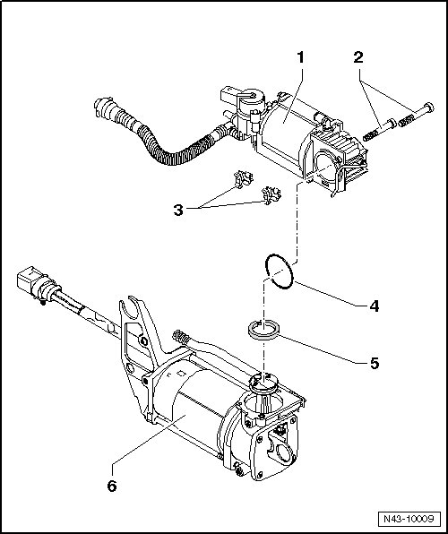

Air Supply Unit Assembly Overview
Air Supply Unit Assembly Overview
• As of Vehicle Identification Number (VIN) WVGLG77L05D072104, there is a new gray piston ring (--> [ (Item 5) Piston ring ]) installed.
• The brown piston ring, installed up to VIN WVGLG77L05D072104, is replaced by the gray piston ring.
• Only the gray piston ring is available in the replacement kit together with Torx bolts --> [ (Item 2) Torx bolts T30 ] and gasket --> [ (Item 4) Seal ].

1 Air supply unit, upper part
• With cylinder head.
2 Torx bolts T30
• Always replace.
• 5 Nm.
• Is included in replacement kit together with gasket --> [ (Item 4) Seal ] and piston ring --> [ (Item 5) Piston ring ].
3 Bracket
• For air line
4 Seal
• Always replace.
• Is included in replacement kit together with Torx bolts --> [ (Item 2) Torx bolts T30 ] and piston ring --> [ (Item 5) Piston ring ].
5 Piston ring
• Replace, refer to --> [ Piston Ring ] Overhaul.
• Is included in replacement kit together with Torx bolts --> [ (Item 2) Torx bolts T30 ] and gasket --> [ (Item 4) Seal ].
• Observe notes.
6 Air supply unit, lower part